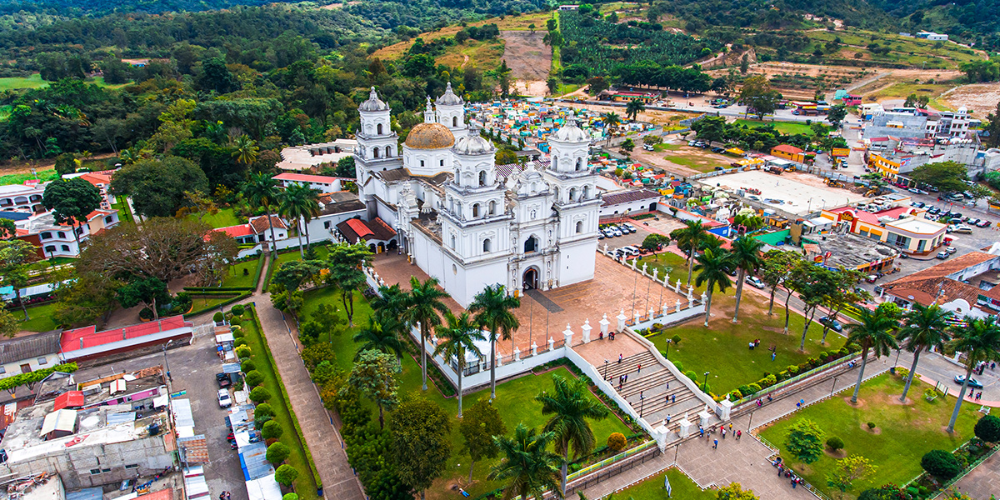

Esquipulas
Ubicada en el departamento de Chiquimula, es un destino religioso mesoamericano desde los inicios
de la colonia y reconocida como la capital centroamericana de la fe por recibir miles de
peregrinaciones que van con un fin en común… devoción o penitencia.
Dentro de las tradiciones de peregrinación, desde hace años, .
se ha reconocido esta romería como la Ruta Santa del Peregrino,.
donde los fieles devotos han realizado caminatas con cánticos y rezos hasta llegar a su encuentro .
con el Señor de Esquipulas..
Este es uno de los destinos religiosos más importantes y visitados de Guatemala, .
ya que ahí se encuentra la Basílica de Esquipulas que fue construida entre .
1740 y 1758, en su interior permanece la milagrosa imagen del Cristo Negro S.
eñor de Esquipulas y es considerado el templo católico más grande de toda Centroamérica. .
Fue declarada monumento histórico y artístico el 12 de junio de 1970. El 15 de enero es la fiesta titular y durante toda la semana .
los peregrinos procedentes de diferentes partes del mundo recorren sus calles, .
para pedir algún milagro, comprar algún recuerdo de su visita y disfrutar de la gastronomía local..
Ofrece a los visitantes una gran variedad de flora, fauna y bosques nubosos que pueden ser recorridos en la Reserva de la biosfera .
Trifinio o bien pueden visitar Finca Los Girasoles, donde los turistas realizan caminatas con familiares y amigos, disfrutando de la naturaleza. .
Ofrece además, un sin número de actividades de entretenimiento al contar con.
hoteles y restaurantes de la más alta calidad..
Piedra de los Compadres es el lugar más visitado por los supersticiosos,.
donde las comunidades tradicionales creen que son una manifestación de poderes .
divinos, o bien, materialización de voluntades celestiales. Por ello el lugar es escena de.
rituales mayas sagrados, rezos, sacrificios y penitencias..
